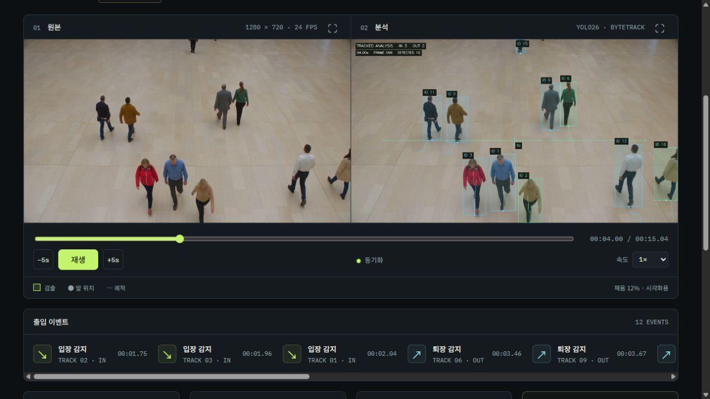

집계 기준
09.15의 적은 TrackTrack ID 수만으로 설정을 선택하지 않았습니다. 보강 원근 영상에서는 1건 누락이 드러났고, ByteTrack·BoT-SORT는 5건을 유지했습니다. 실제 영상의 신원 정답으로 재검증할 때까지 기본 ByteTrack을 유지합니다.
AI · 모델 비교
사람의 이동과 선 통과를 추적합니다. 원근·가림·재등장 영상 3개를 보강해 검출기 4개와 추적 설정 3개를 비교했습니다. 원본·결과 영상, 63회 실행 기록과 누락 사례를 공개했습니다.

09.21 · 원본 3개 · 반복 제외
YOLO26n · v8n · 11n · RT-DETRv2-S
검출 36회 · 캐시 추적 27회
01 / 개요
검출 표시만으로는 사람이 빠지거나 ID가 바뀌는 지점을 확인하기 어렵습니다. 같은 프레임의 원본과 결과를 나란히 재생하고, 반투명 표시와 출입 기록을 함께 살펴보도록 만들었습니다.
로컬 Python 앱이 검출·추적·집계를 수행합니다. 공개 웹은 저장된 영상·CSV·JSON을 보여주는 결과 뷰어입니다.
02 / 구조
기본 앱은 YOLO26n + ByteTrack입니다. confidence 0.1, 선 (0.1, 0.55)→(0.9, 0.55), 아래 방향 IN, 경계 여유 8px을 고정했습니다. 비교 영상은 저장된 좌표로 렌더하며 모델을 다시 실행하지 않습니다.
검출기 비교에는 같은 ByteTrack·집계기를 연결했습니다. 추적기 비교는 첫 YOLO 실행의 박스·점수를 재사용했습니다. 평가 영상에 맞춘 재학습이나 임계값 조정은 하지 않았습니다.
원본 프레임
YOLO26n
ByteTrack
유한한 선 · IN / OUT
영상 · 실행 기록
2026.09.21 / 보강
Higgsfield Seedance 2.5로 15초 영상 3개를 새로 만들었습니다. 각 361프레임, 총 1,083개 고유 프레임에 검출 4종과 캐시 추적 3설정을 각각 3회 실행했습니다. 원본만 본 AI 검수의 통과 15건을 추론 전에 고정했습니다.
FP32·TF32 OFF·640×640·batch 1을 고정하고 같은 ByteTrack·집계기를 연결했습니다. YOLO26n은 one-to-many + 외부 NMS 경로입니다. YOLO의 letterbox와 RT-DETRv2의 warp 전처리, 모델 규모는 서로 다릅니다.
검출기 4종 모두 원근 IN 5 / OUT 0, 가림 0 / 0, 재등장 5 / 5였습니다. 엄격한 시간창은 총 13 / 15, 사전 정의한 ±0.5초 분석은 15 / 15가 대응했습니다. 방향·시간 대응이며 인물 신원 정확도는 아닙니다.
| 검출기 | 원근 FPS | 가림 FPS | 재등장 FPS |
|---|---|---|---|
| YOLO26n | 89.91 (86.27–90.54) | 93.63 (92.73–94.84) | 91.03 (88.71–92.00) |
| YOLOv8n | 105.11 (104.85–109.41) | 116.71 (116.42–120.73) | 113.61 (112.70–117.24) |
| YOLO11n | 94.14 (93.39–94.74) | 99.65 (96.28–101.62) | 100.22 (94.94–100.63) |
| RT-DETRv2-S | 39.08 (38.22–40.03) | 38.73 (38.21–41.30) | 39.17 (38.98–39.74) |
2026.09.21 / 추적
동일한 YOLO26n 첫 실행의 박스·점수·순서를 ByteTrack·BoT-SORT·TrackTrack에 전달했습니다. ReID와 카메라 이동 보정은 끄고 lost buffer는 24프레임으로 맞췄습니다. 추적기별 기본 연관 임계값은 조정하지 않았습니다.
원근 영상에서 TrackTrack은 원본의 5건 중 1건을 놓쳤습니다. 세 반복 모두 같았습니다. ID 수는 12→10→5로 줄었지만 집계는 5→5→4가 되어, 적은 ID 수를 성능 향상으로 해석할 수 없었습니다.
누락 대상은 선두 회색 상의였습니다. F135에서 ByteTrack·BoT-SORT는 ID 4로 IN을 기록했지만 TrackTrack은 같은 박스에 ID를 배정하지 않았습니다. F0–138에서 대상의 발을 포함한 후보의 최대 점수는 0.674920으로 신규 트랙 기준 0.7보다 낮았습니다. ID가 있는 점만 집계기에 들어가므로 신규 ID 미성립이 입력 누락으로 이어졌습니다. 혼합·중복 박스가 있는 이 구성의 관측이며, 임계값을 바꾼 대조 실험은 하지 않았습니다.
첫 반복의 고정 앵커 검수에서는 벽 가림 F18→192와 화면 밖 복귀 F120→240 모두 7조건에서 같은 ID 유지를 확인하지 못했습니다. ID 변경 또는 검출·ID 부재가 있었습니다. 짧은 교행 F48→72의 두 앵커는 7조건 모두 같은 ID였지만, 사이 전 프레임의 신원 유지를 보장하지 않습니다. 원본에서도 동일인 여부는 외양에 따른 추정이며, 긴 부재는 24프레임 유지 범위를 넘습니다.
| 추적기 | 원근 IN / OUT | 추적 ID | p50 / p95 ms |
|---|---|---|---|
| ByteTrack | 5 / 0 | 12 | 0.528 / 0.699 |
| BoT-SORT | 5 / 0 | 10 | 0.511 / 0.688 |
| TrackTrack | 4 / 0 | 5 | 0.599 / 0.788 |
03 / 09.15 검출
검출기 3개를 고유 602프레임에서 각각 3회 실행했습니다. 모든 반복에서 다인 영상은 IN 4 / OUT 8, 2인 영상은 IN 1 / OUT 1이었습니다. 반복한 영상을 독립 표본으로 세지 않습니다.
아래 FPS는 RTX 4090의 3회 중앙값과 최솟값–최댓값입니다. 읽기·검출·추적·집계·JSONL 기록을 포함하고 초기화·첫 프레임 5회 워밍업·렌더·영상 인코딩을 제외합니다. GPU 작업은 순차 실행하고 CUDA 완료까지 동기화했습니다.
| 검출기 | 입력 · 정밀도 | 다인 FPS | 2인 FPS |
|---|---|---|---|
| YOLO26n | 640 · FP16 | 60.89 (58.61–61.23) | 67.01 (59.29–74.07) |
| RF-DETR Small | 512 · FP32 eager | 31.66 (31.04–33.40) | 31.07 (30.81–33.31) |
| DEIMv2-S | 640 · FP32 deploy | 18.29 (15.73–20.88) | 21.57 (20.40–23.01) |
04 / 09.15 추적
602프레임 × 3설정 × 3회, 총 5,418개 프레임 기록의 순서·시각·박스·점수가 같은 YOLO 캐시와 일치했습니다. 세 설정 모두 다인 4 / 8, 2인 1 / 1을 기록했습니다.
아래는 다인 영상의 검출 제외 추적 단계 지연입니다. 각 반복의 p50·p95를 구한 뒤 3회 중앙값으로 요약했습니다. 캐시 재생 FPS를 전체 추론 FPS로 쓰지 않습니다.
| 추적기 | 추적 ID | p50 ms | p95 ms |
|---|---|---|---|
| ByteTrack | 22 | 0.720 | 1.607 |
| TrackTrack | 18 | 1.307 | 3.004 |
| TrackTrack + ReID | 18 | 16.333 | 98.002 |
05 / 09.15 검수
기존 AI 원본 시각 검수의 14개 시간 구간을 고정했습니다. YOLO26n·DEIMv2-S·TrackTrack 두 설정은 14 / 14, RF-DETR는 13 / 14가 대응했습니다. RF-DETR의 한 OUT은 구간보다 0.083초 늦었으며 ±0.5초 보조 대조에서는 14 / 14였습니다.
대조 기준은 클립·방향·시간의 일대일 대응입니다. 같은 인물인지 확인한 정답이나 사람 검수자 합의는 아닙니다.
06 / 서버
별도의 로컬 HTTP 서버에서 YOLO26n 실제 가중치를 CPU로 실행했습니다. 정상 추론 20건과 시간 초과·추론 프로세스 종료 후의 자동 재시작을 확인하고, 실제 검출 좌표·응답 시간·오류 기록을 공개했습니다.
CPU FP32·2개 스레드·동시 추론 1개로 고정했습니다. 웹은 기록 뷰어이며 검증 서버는 종료했습니다. GPU 서빙, 장시간 운용, HTTP 서버·호스트 복구 또는 다른 모델 버전으로의 롤백을 검증한 것은 아닙니다.
| 항목 | 관측 |
|---|---|
| 실제 모델 추론 | 20 / 20 |
| 동시 요청 제한 / 시간 초과 | 429 / 504 |
| worker 종료 후 재시작 | 503 → 200 |
| 복구 후 처리 중 요청 | 0 |
ENGINEERING DECISIONS
09.15의 적은 TrackTrack ID 수만으로 설정을 선택하지 않았습니다. 보강 원근 영상에서는 1건 누락이 드러났고, ByteTrack·BoT-SORT는 5건을 유지했습니다. 실제 영상의 신원 정답으로 재검증할 때까지 기본 ByteTrack을 유지합니다.
생성 프롬프트의 인원과 동선을 정답으로 쓰지 않았습니다. 완성된 원본의 출입을 먼저 검수한 뒤 실행 결과와 대조했습니다.
초기 재실 인원을 모르므로 계산 기준 0과 실제 인원을 구분합니다. 순증감 −4나 하한 보정된 0을 절대 재실 인원으로 해석하지 않습니다.
로컬 기본 마스킹은 solid입니다. 웹의 12% 채움은 원본을 살펴보기 위한 표시로 privacy_protection=false이며, 검출되지 않은 사람은 solid에서도 가려지지 않습니다.
SCOPE & LIMITS
대한민국 · 한국어 / 영어